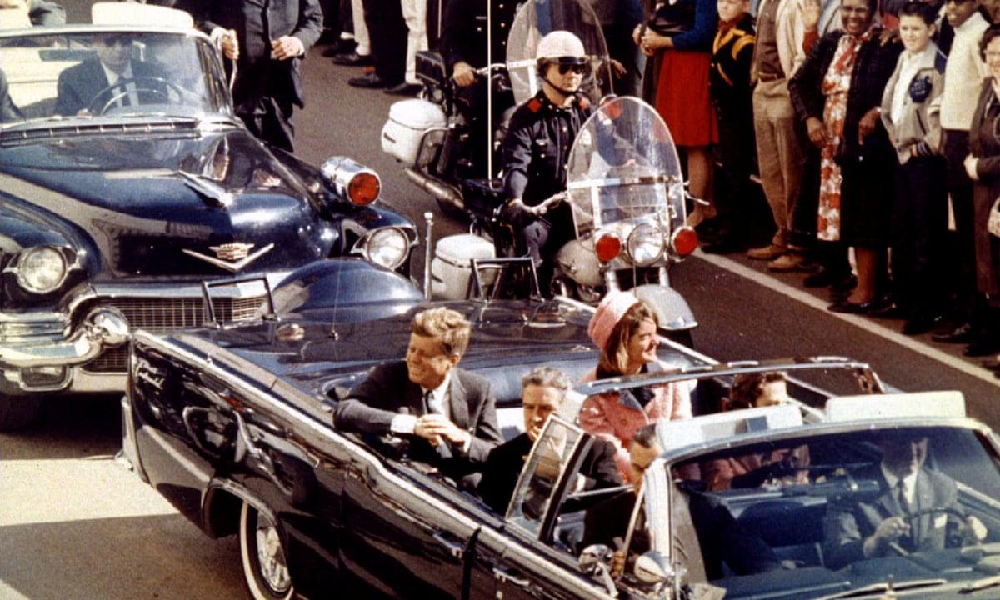
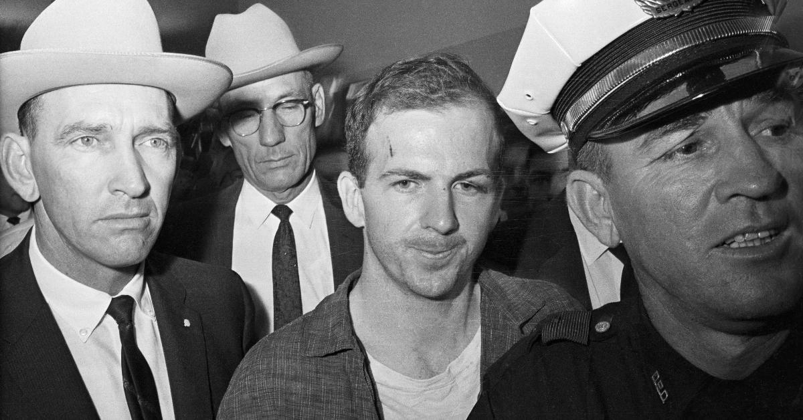

Inilah peristiwa yang paling dikenang dari kehidupan John F. Kennedy. Pada 22 November 1963, Kennedy melakukan kunjungan politik ke Dallas, Texas. Tujuannya adalah memperkuat dukungan politik Partai Demokrat menjelang pemilihan presiden 1964. Ia datang bersama Jacqueline Kennedy dan rombongan pejabat pemerintah.
Pada hari itu, Kennedy menaiki mobil kepresidenan terbuka yang melintasi jalan-jalan Dallas. Ketika iring-iringan kendaraan melewati kawasan Dealey Plaza, beberapa tembakan terdengar. Kennedy terkena tembakan dan mengalami luka fatal di bagian kepala. Ia kemudian dibawa ke Parkland Memorial Hospital.
Namun, pada pukul 13.00 waktu setempat, Kennedy dinyatakan meninggal dunia. Usianya baru 46 tahun. Wakil Presiden Lyndon B. Johnson kemudian dilantik menjadi presiden di dalam pesawat kepresidenan Air Force One sebelum pesawat tersebut meninggalkan Dallas. Jacqueline Kennedy berada di samping Johnson saat pelantikan tersebut.
Siapa yang membunuh Kennedy?

Pihak berwenang menangkap seorang pria bernama Lee Harvey Oswald. Oswald dituduh melakukan pembunuhan Kennedy. Namun, dua hari setelah penangkapannya, pada 24 November 1963, Oswald ditembak oleh pemilik klub malam bernama Jack Ruby ketika sedang dipindahkan dalam tahanan polisi. Oswald meninggal sebelum menjalani persidangan. Akibatnya, banyak pertanyaan mengenai pembunuhan Kennedy tidak pernah dapat diuji melalui persidangan terhadap dirinya.
Hasil Penyelidikan
Pemerintah Amerika kemudian membentuk Warren Commission untuk menyelidiki pembunuhan tersebut. Komisi itu menyimpulkan pada 1964 bahwa Oswald bertindak sendiri dan tidak menemukan bukti yang cukup untuk menyatakan adanya konspirasi. Namun, kesimpulan tersebut terus menjadi bahan perdebatan publik dan penelitian sejarah. Penting untuk membedakan antara kesimpulan resmi penyelidikan, bukti yang telah ditemukan, dan berbagai teori konspirasi yang berkembang setelahnya.